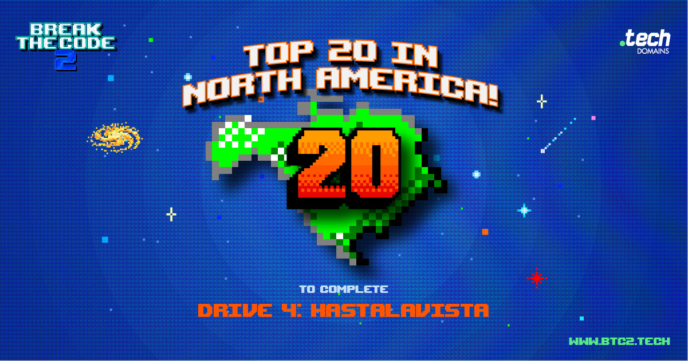

0 // ARG Competitor
The first ARG I ever participated in was the QLEDecode ARG in 2020. A joint collaboration between Samsung, XBox, and CD Projekt Red to promote the then-upcoming release of Cyberpunk 2077. While I narrowly missed out on qualifying for the finals, it was a lot of fun and I made many new friends over the course of the game. To this day, I remain good friends with the winner.

Over the next few years I would participate in many more ARGs, mostly with friends I made in QLEDecode. The most notable of which would be Break the Code and Break the Code 2, where I finished top 20 in North America. I'd also like to shoutout two ARGs I played in this time that were never finished but which I found to be a lot of fun. Those being ECGO and HISAC (Hookland Institude of Science Automatic Computer).After a couple year lull, I got heavily involved in ARGs again in early 2025 when I discovered Cicada Detroit — a 42 puzzle challenge taking place online and in-person in metro Detroit. Which I ultimately took first place in later that year. Over the course of 2025, I made many new friends through Cicada Detroit, and together we claimed 5 of the 11 prizes in KFC's The Colonel’s Secret ARG.
1 // ARG Creator
After winning Cicada Detroit, I was invited to join the team at ARGHouse — the company behind it. Thus beginning my professional career in ARGs as both a puzzle designer and software engineer. The first project I worked on was the 2025 XIXMAS Challenge, which was a Cicada Detroit side mission.
Over the course of 2026, I have worked on numerous ARGHouse project as detailed in the table below
| Year | ARG | Role(s) |
|---|---|---|
| 2025 | Cicada Detroit: XIXMAS | Puzzle design |
| 2026 | Cell Operations | Web infrastructure, puzzle consultation |
| Weekend At the End Of the World | Puzzle design, web design | |
| Cicada Detroit: Cicada Hilaria | Puzzle design | |
| Find Buzzy | Puzzle design | |
| Cicada Challenge: RUNE | Puzzle design, web design, story editing |